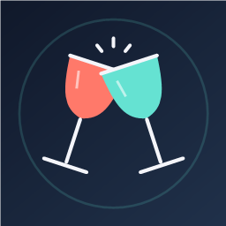
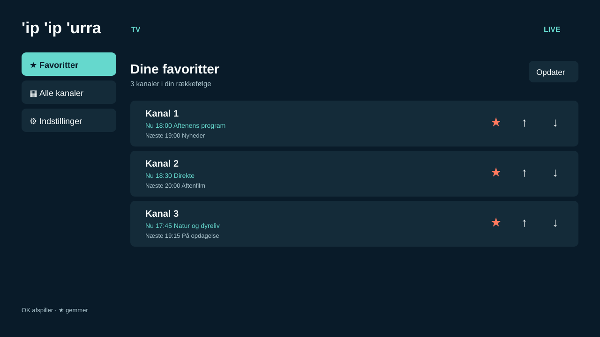
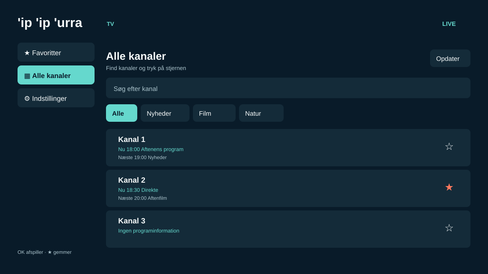
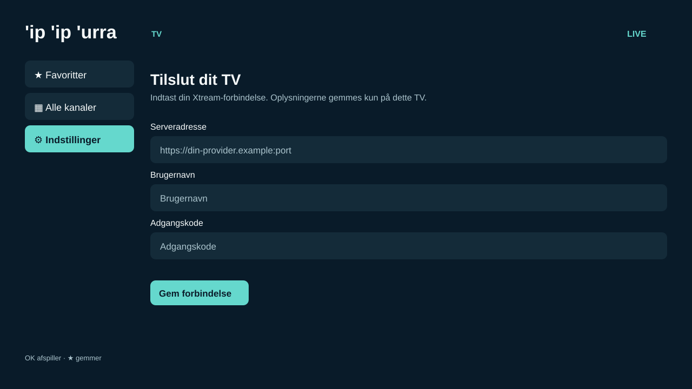

Find en kanal
Søg efter navn, eller filtrer listen efter kategori. Tryk OK på en kanal for at starte afspilning.

'ip 'ip 'urraFind livekanaler, film og serier fra din egen Xtream-forbindelse. Søg i kataloget, gem favoritserier, og afspil med fjernbetjeningen.
Hent APK til Android TV Du skal bruge serveradresse, brugernavn og adgangskode fra din tv-udbyder.


Søg efter navn, eller filtrer listen efter kategori. Tryk OK på en kanal for at starte afspilning.
Tryk på stjernen ved en kanal for at gemme den. Flyt favoritterne op og ned i den rækkefølge, du vil se dem.
Ved favoritterne vises nuværende og næste program, når din udbyder leverer programinformation.
Gennemse plakater, søg efter titel, eller vælg en kategori. Åbn en serie for at vælge sæson og afsnit.
Tryk på stjernen ved en serie. Du finder den igen under Mine serier.
Se programmer for dine favoritkanaler, når udbyderen leverer EPG.
Skift mellem favoritkanaler med op og ned under afspilning. Tryk OK for at vise afspillerens knapper.
Hent APK-filen, installer den på dit Android TV, og indtast din Xtream-forbindelse under Indstillinger. Appen gemmer forbindelsen på dit TV.
Hent APK